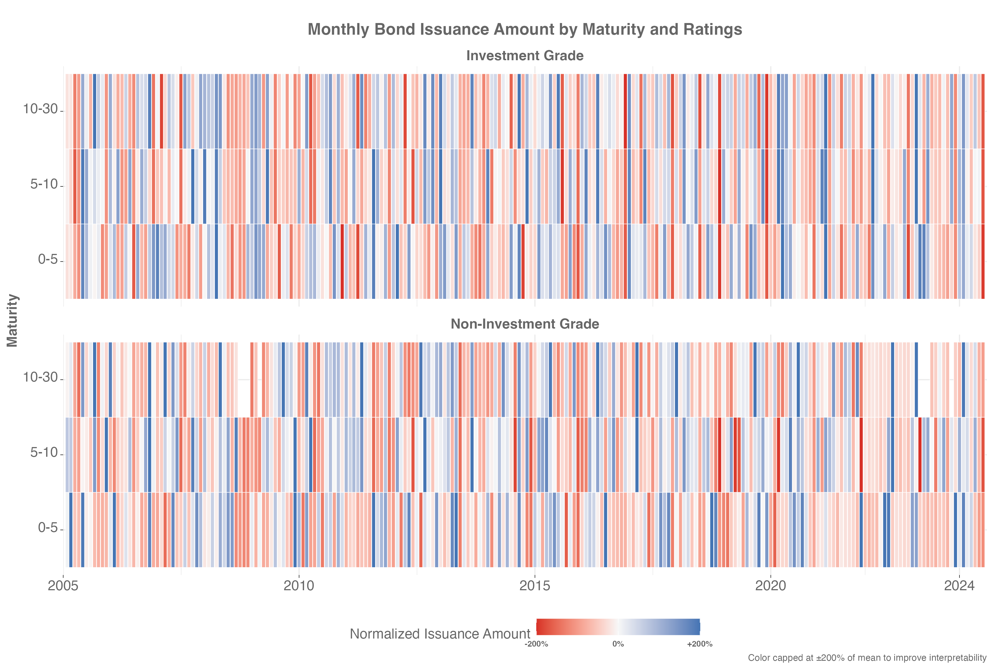

Hi! I’m a first-year Finance Ph.D. at the University of Illinois Urbana-Champaign.
Research Interests: Credit Markets, Insurance, Macro-Finance
You can reach out to me at virajrc2@illinois.edu
LinkedIn Twitter Github CV

View all research →